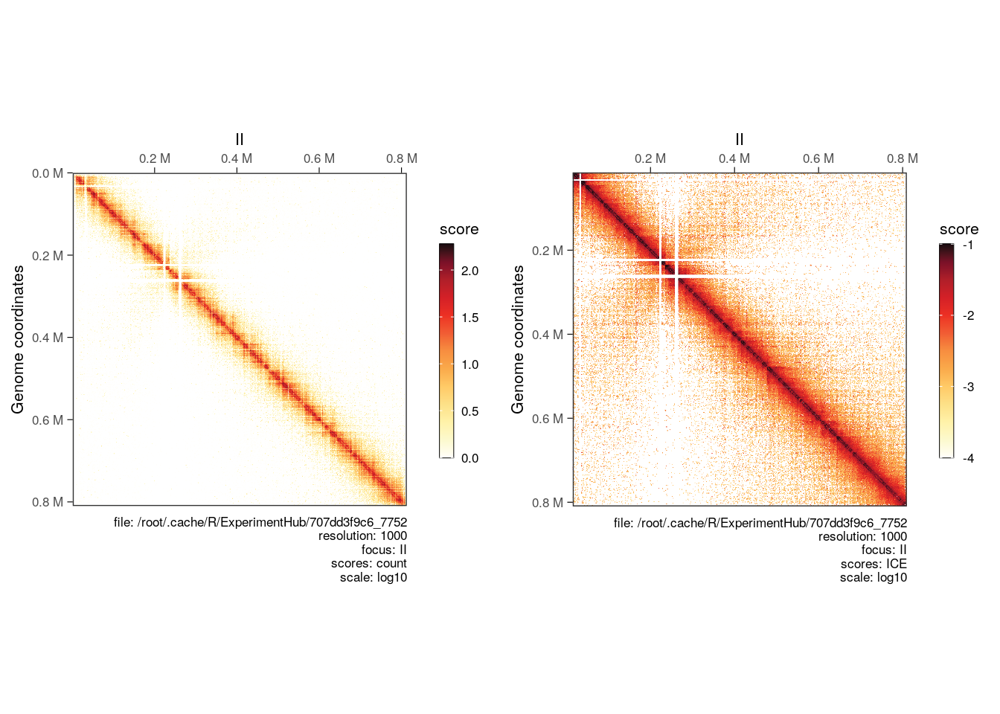
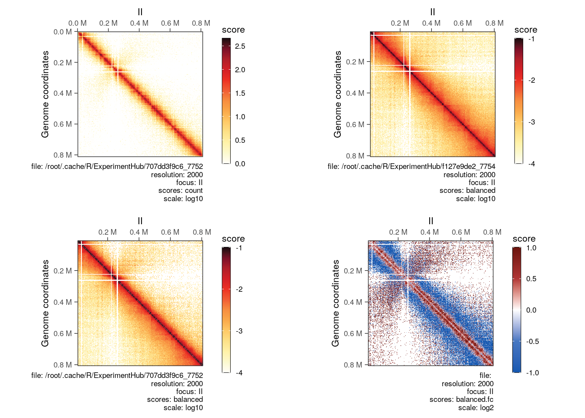
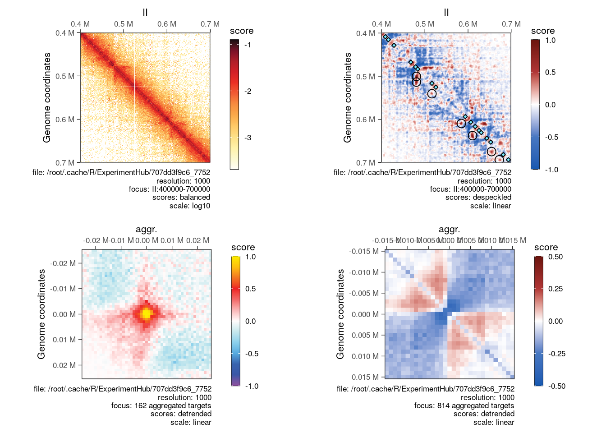

5 Performing arithmetics on Hi-C matrices
Aim: This notebook illustrates how to leverage HiCExperiment data structure with HiContacts package to operate on Hi-C matrices.
5.1 Data import and basic matrix arithmetics
5.1.1 Yeast data
We will start by importing a WT .mcool file in R and perform normalization on the imported matrix.
## Loading required package: ExperimentHub## Loading required package: BiocGenerics##
## Attaching package: 'BiocGenerics'## The following object is masked from 'package:HiCExperiment':
##
## as.data.frame## The following objects are masked from 'package:stats':
##
## IQR, mad, sd, var, xtabs## The following objects are masked from 'package:base':
##
## anyDuplicated, aperm, append, as.data.frame, basename, cbind,
## colnames, dirname, do.call, duplicated, eval, evalq, Filter,
## Find, get, grep, grepl, intersect, is.unsorted, lapply, Map,
## mapply, match, mget, order, paste, pmax, pmax.int, pmin,
## pmin.int, Position, rank, rbind, Reduce, rownames, sapply,
## setdiff, sort, table, tapply, union, unique, unsplit, which.max,
## which.min## Loading required package: AnnotationHub## Loading required package: BiocFileCache## Loading required package: dbplyr##
## Attaching package: 'HiContacts'## The following objects are masked from 'package:HiCExperiment':
##
## contacts_yeast, contacts_yeast_eco1## The following object is masked from 'package:base':
##
## mergemcf <- HiContactsData('yeast_wt', 'mcool')## snapshotDate(): 2023-02-14## see ?HiContactsData and browseVignettes('HiContactsData') for documentation## loading from cachepf <- HiContactsData('yeast_wt', 'pairs.gz')## snapshotDate(): 2023-02-14## see ?HiContactsData and browseVignettes('HiContactsData') for documentation## downloading 1 resources## retrieving 1 resource## loading from cachecf <- CoolFile(mcf, resolution = 1000, pairsFile = pf)
wt <- import(cf)
contacts <- wt[c('II')] |> normalize(niters = 200)##
|
| | 0%
|
| | 1%
|
|- | 2%
|
|-- | 3%
|
|-- | 4%
|
|-- | 5%
|
|--- | 6%
|
|---- | 7%
|
|---- | 8%
|
|---- | 9%
|
|----- | 10%
|
|------ | 11%
|
|------ | 12%
|
|------ | 13%
|
|------- | 14%
|
|-------- | 15%
|
|-------- | 16%
|
|-------- | 17%
|
|--------- | 18%
|
|---------- | 19%
|
|---------- | 20%
|
|---------- | 21%
|
|----------- | 22%
|
|------------ | 23%
|
|------------ | 24%
|
|------------ | 25%
|
|------------- | 26%
|
|-------------- | 27%
|
|-------------- | 28%
|
|-------------- | 29%
|
|--------------- | 30%
|
|---------------- | 31%
|
|---------------- | 32%
|
|---------------- | 33%
|
|----------------- | 34%
|
|------------------ | 35%
|
|------------------ | 36%
|
|------------------ | 37%
|
|------------------- | 38%
|
|-------------------- | 39%
|
|-------------------- | 40%
|
|-------------------- | 41%
|
|--------------------- | 42%
|
|---------------------- | 43%
|
|---------------------- | 44%
|
|---------------------- | 45%
|
|----------------------- | 46%
|
|------------------------ | 47%
|
|------------------------ | 48%
|
|------------------------ | 49%
|
|------------------------- | 50%
|
|-------------------------- | 51%
|
|-------------------------- | 52%
|
|-------------------------- | 53%
|
|--------------------------- | 54%
|
|---------------------------- | 55%
|
|---------------------------- | 56%
|
|---------------------------- | 57%
|
|----------------------------- | 58%
|
|------------------------------ | 59%
|
|------------------------------ | 60%
|
|------------------------------ | 61%
|
|------------------------------- | 62%
|
|-------------------------------- | 63%
|
|-------------------------------- | 64%
|
|-------------------------------- | 65%
|
|--------------------------------- | 66%
|
|---------------------------------- | 67%
|
|---------------------------------- | 68%
|
|---------------------------------- | 69%
|
|----------------------------------- | 70%
|
|------------------------------------ | 71%
|
|------------------------------------ | 72%
|
|------------------------------------ | 73%
|
|------------------------------------- | 74%
|
|-------------------------------------- | 75%
|
|-------------------------------------- | 76%
|
|-------------------------------------- | 77%
|
|--------------------------------------- | 78%
|
|---------------------------------------- | 79%
|
|---------------------------------------- | 80%
|
|---------------------------------------- | 81%
|
|----------------------------------------- | 82%
|
|------------------------------------------ | 83%
|
|------------------------------------------ | 84%
|
|------------------------------------------ | 85%
|
|------------------------------------------- | 86%
|
|-------------------------------------------- | 87%
|
|-------------------------------------------- | 88%
|
|-------------------------------------------- | 89%
|
|--------------------------------------------- | 90%
|
|---------------------------------------------- | 91%
|
|---------------------------------------------- | 92%
|
|---------------------------------------------- | 93%
|
|----------------------------------------------- | 94%
|
|------------------------------------------------ | 95%
|
|------------------------------------------------ | 96%
|
|------------------------------------------------ | 97%
|
|------------------------------------------------- | 98%
|
|--------------------------------------------------| 99%
|
|--------------------------------------------------| 100%contacts## `HiCExperiment` object with 471,364 contacts over 814 regions
## -------
## fileName: "/root/.cache/R/ExperimentHub/707dd3f9c6_7752"
## focus: "II"
## resolutions(5): 1000 2000 4000 8000 16000
## active resolution: 1000
## interactions: 74360
## scores(3): count balanced ICE
## topologicalFeatures: compartments(0) borders(0) loops(0) viewpoints(0)
## pairsFile: /root/.cache/R/ExperimentHub/f130a86bb7_7753
## metadata(0):cowplot::plot_grid(
plotMatrix(contacts, use.scores = 'count', scale = 'log10'),
plotMatrix(contacts, use.scores = 'ICE', scale = 'log10', limits = c(-4, -1))
)
We can do the same for a Hi-C dataset generated in a eco1 mutant.
mcf <- HiContactsData('yeast_eco1', 'mcool')## snapshotDate(): 2023-02-14## see ?HiContactsData and browseVignettes('HiContactsData') for documentation## downloading 1 resources## retrieving 1 resource## loading from cachepf <- HiContactsData('yeast_eco1', 'pairs.gz')## snapshotDate(): 2023-02-14## see ?HiContactsData and browseVignettes('HiContactsData') for documentation## downloading 1 resources## retrieving 1 resource## loading from cache## `HiCExperiment` object with 19,136,736 contacts over 12,079 regions
## -------
## fileName: "/root/.cache/R/ExperimentHub/f127e9de2_7754"
## focus: "whole genome"
## resolutions(5): 1000 2000 4000 8000 16000
## active resolution: 1000
## interactions: 6474816
## scores(2): count balanced
## topologicalFeatures: compartments(0) borders(0) loops(0) viewpoints(0)
## pairsFile: /root/.cache/R/ExperimentHub/f169ff97ec_7755
## metadata(0):Now that we have these two HiCExperiment objects, we can:
-
refocusto change the field of view then -
zoomto change the resolution then -
detrendto calculate ovserved/expected fold-change and -
despeckleto remove background noise by applying a smoothing kernel
Them we can proceed to divide the contact matrix of the WT sample by the eco1 sample and plot each HiCExperiment matrix.
wt_II <- wt |>
refocus('II') |>
zoom(2000) |>
detrend() |>
despeckle(use.scores = 'detrended')
eco1_II <- eco1 |>
refocus('II') |>
zoom(2000) |>
detrend() |>
despeckle(use.scores = 'detrended')
div_contacts <- divide(wt_II, by = eco1_II)
div_contacts## `HiCExperiment` object with 0 contacts over 407 regions
## -------
## fileName: N/A
## focus: "II"
## resolutions(1): 2000
## active resolution: 2000
## interactions: 83009
## scores(12): count.x balanced.x expected.x detrended.x despeckled.x count.by balanced.by expected.by detrended.by despeckled.by balanced.fc balanced.l2fc
## topologicalFeatures: ()
## pairsFile: N/A
## metadata(2): hce_list operationp_div <- cowplot::plot_grid(
plotMatrix(wt_II, use.scores = 'count', scale = 'log10'),
plotMatrix(eco1_II, use.scores = 'balanced', scale = 'log10', limits = c(-4, -1)),
plotMatrix(wt_II, compare.to = eco1_II, use.scores = 'balanced', scale = 'log10', limits = c(-4, -1)),
plotMatrix(div_contacts, use.scores = 'balanced.fc', scale = 'log2', limits = c(-1, 1), cmap = bwrColors())
)
p_div
Focusing on a narrower genomic region, it may be relevant to point out specific topological features, such as focal loops (“dots” in the contact matrices) or domain borders. We can do this by providing relevant arguments to the plotting function.
We can also aggregate Hi-C maps over a list of genomic coordinates, either on-diagonal (e.g. for border aggregated plots) or off-diagonal (e.g. for loop aggregated plots).
library(rtracklayer)## Loading required package: GenomicRanges## Loading required package: stats4## Loading required package: S4Vectors##
## Attaching package: 'S4Vectors'## The following object is masked from 'package:HiCExperiment':
##
## metadata<-## The following objects are masked from 'package:base':
##
## expand.grid, I, unname## Loading required package: IRanges## Loading required package: GenomeInfoDb##
## Attaching package: 'rtracklayer'## The following object is masked from 'package:AnnotationHub':
##
## hubUrllibrary(InteractionSet)## Loading required package: SummarizedExperiment## Loading required package: MatrixGenerics## Loading required package: matrixStats##
## Attaching package: 'MatrixGenerics'## The following objects are masked from 'package:matrixStats':
##
## colAlls, colAnyNAs, colAnys, colAvgsPerRowSet, colCollapse,
## colCounts, colCummaxs, colCummins, colCumprods, colCumsums,
## colDiffs, colIQRDiffs, colIQRs, colLogSumExps, colMadDiffs,
## colMads, colMaxs, colMeans2, colMedians, colMins, colOrderStats,
## colProds, colQuantiles, colRanges, colRanks, colSdDiffs, colSds,
## colSums2, colTabulates, colVarDiffs, colVars, colWeightedMads,
## colWeightedMeans, colWeightedMedians, colWeightedSds,
## colWeightedVars, rowAlls, rowAnyNAs, rowAnys, rowAvgsPerColSet,
## rowCollapse, rowCounts, rowCummaxs, rowCummins, rowCumprods,
## rowCumsums, rowDiffs, rowIQRDiffs, rowIQRs, rowLogSumExps,
## rowMadDiffs, rowMads, rowMaxs, rowMeans2, rowMedians, rowMins,
## rowOrderStats, rowProds, rowQuantiles, rowRanges, rowRanks,
## rowSdDiffs, rowSds, rowSums2, rowTabulates, rowVarDiffs,
## rowVars, rowWeightedMads, rowWeightedMeans, rowWeightedMedians,
## rowWeightedSds, rowWeightedVars## Loading required package: Biobase## Welcome to Bioconductor
##
## Vignettes contain introductory material; view with
## 'browseVignettes()'. To cite Bioconductor, see
## 'citation("Biobase")', and for packages 'citation("pkgname")'.##
## Attaching package: 'Biobase'## The following object is masked from 'package:MatrixGenerics':
##
## rowMedians## The following objects are masked from 'package:matrixStats':
##
## anyMissing, rowMedians## The following object is masked from 'package:ExperimentHub':
##
## cache## The following object is masked from 'package:AnnotationHub':
##
## cachetopologicalFeatures(wt_II, 'loops') <- system.file('extdata', 'S288C-loops.bedpe', package = 'HiCExperiment') |>
import() |>
makeGInteractionsFromGRangesPairs()
topologicalFeatures(wt_II, 'borders') <- system.file('extdata', 'S288C-borders.bed', package = 'HiCExperiment') |>
import()
contacts <- refocus(wt_II, 'II:400000-700000') |>
zoom(1000) |>
detrend() |>
despeckle(use.scores = 'detrended', focal.size = 2)
aggr_loops <- aggregate(contacts, targets = topologicalFeatures(wt_II, 'loops'), flankingBins = 25)## Going through preflight checklist...## Parsing the entire contact matrice as a sparse matrix...## Modeling distance decay...## Filtering for contacts within provided targets...aggr_borders <- aggregate(contacts, targets = topologicalFeatures(wt_II, 'borders'), flankingBins = 15)## Going through preflight checklist...## Parsing the entire contact matrice as a sparse matrix...## Modeling distance decay...## Filtering for contacts within provided targets...aggr_borders## `AggrHiCExperiment` object over 810 targets
## -------
## fileName: "/root/.cache/R/ExperimentHub/707dd3f9c6_7752"
## focus: 810 targets
## resolutions(5): 1000 2000 4000 8000 16000
## active resolution: 1000
## interactions: 961
## scores(4): count balanced expected detrended
## slices(4): count balanced expected detrended
## topologicalFeatures: targets(810) compartments(0) borders(814) loops(162) viewpoints(0)
## pairsFile: /root/.cache/R/ExperimentHub/f130a86bb7_7753
## metadata(0):cowplot::plot_grid(
plotMatrix(
contacts,
use.scores = 'balanced'
),
plotMatrix(
contacts,
use.scores = 'despeckled',
loops = topologicalFeatures(wt_II, 'loops'),
borders = topologicalFeatures(wt_II, 'borders'),
scale = 'linear',
limits = c(-1, 1),
cmap = bwrColors()
),
plotMatrix(
aggr_loops,
use.scores = 'detrended',
scale = 'linear',
limits = c(-1, 1),
cmap = rainbowColors()
),
plotMatrix(
aggr_borders,
use.scores = 'detrended',
scale = 'linear',
limits = c(-0.5, 0.5),
cmap = bwrColors()
)
)
5.1.2 Playing with mammalian data
The same operations (i.e. detrending, despeckling, ,,,) are also possible on larger genomes. On top of that, it is sometimes useful to autocorrelate the Hi-C matrix to highlight the compartments “plaid” pattern.
Here, the maxDistance argument can be used to plot triangular horizontal matrices rather than square matrices.
library(fourDNData)
library(cowplot)
## G0G1 neural progenitors cells (FACS sorted, Sox1-GFP+), Bonev et al. 2017
npcs_mcool <- fourDNData('4DNESJ9SIAV5', type = 'mcool')
npcs_large <- import(npcs_mcool, focus = 'chr3:80000000-120000000', resolution = 250000) |>
autocorrelate()
npcs_narrow <- import(npcs_mcool, focus = 'chr3:100800000-102400000', resolution = 5000) |>
detrend() |>
despeckle(use.scores = 'detrended')
p_mammals_1 <- plot_grid(
plotMatrix(npcs_large, use.scores = 'balanced', scale = 'log10', limits = c(-4, -1), maxDistance = 30000000),
plotMatrix(npcs_large, use.scores = 'autocorrelated', scale = 'linear', limits = c(-1, 1), cmap = bgrColors(), maxDistance = 30000000),
plotMatrix(npcs_narrow, use.scores = 'balanced', scale = 'log10', limits = c(-4, -2), maxDistance = 1200000),
plotMatrix(npcs_narrow, use.scores = 'expected', scale = 'log10', limits = c(-4, -2), maxDistance = 1200000),
plotMatrix(npcs_narrow, use.scores = 'detrended', scale = 'linear', limits = c(-1, 1), maxDistance = 1200000, cmap = rainbowColors()),
plotMatrix(npcs_narrow, use.scores = 'despeckled', scale = 'linear', limits = c(-2, 2), maxDistance = 1200000, cmap = rainbowColors()),
ncol = 1
)
p_mammals_1Finally, subsampleing interactions from a Hi-C experiment can easily be performed, and this is done proportionally with the distance-dependent interaction frequency. Furthermore, if a Hi-C experiment has been binned to a small resolution, it can be coarsened to any larger resolution.
sub_npcs_0.5 <- subsample(npcs_narrow, 0.5)
sub_npcs_0.1 <- subsample(npcs_narrow, 0.1) |>
detrend()
sub_npcs_0.1_rebinned <- coarsen(sub_npcs_0.1, 10000) |>
detrend()
p_mammals_2 <- cowplot::plot_grid(
plotMatrix(npcs_narrow, use.scores = 'balanced', limits = c(-4, -2), maxDistance = 1200000),
plotMatrix(sub_npcs_0.5, use.scores = 'balanced', limits = c(-4, -2), maxDistance = 1200000),
plotMatrix(sub_npcs_0.1, use.scores = 'balanced', limits = c(-4, -2), maxDistance = 1200000),
plotMatrix(sub_npcs_0.1, use.scores = 'detrended', scale = 'linear', limits = c(-1, 1), maxDistance = 1200000, cmap = rainbowColors()),
plotMatrix(sub_npcs_0.1_rebinned, use.scores = 'balanced', maxDistance = 1200000),
plotMatrix(sub_npcs_0.1_rebinned, use.scores = 'detrended', scale = 'linear', limits = c(-1, 1), maxDistance = 1200000, cmap = rainbowColors()),
ncol = 1
)
p_mammals_2